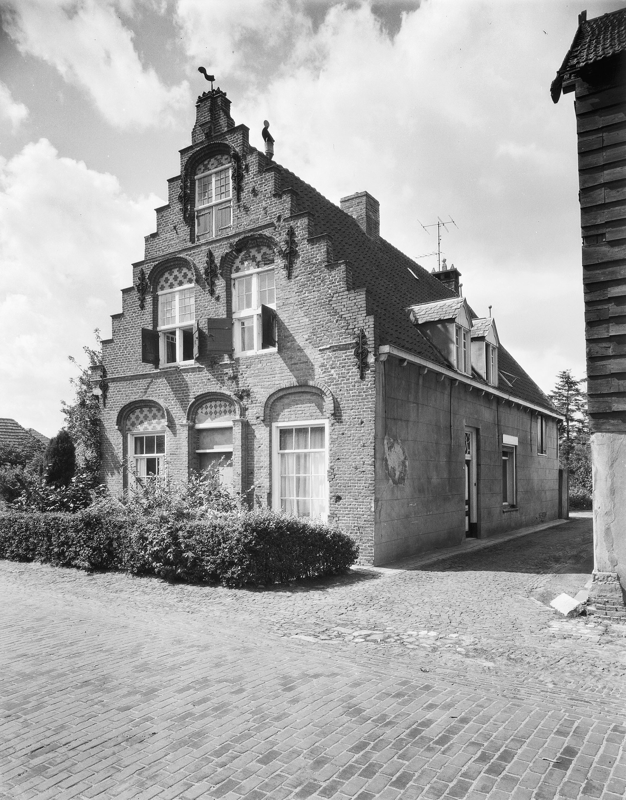

Gestorven tussen 20 feb 1593 en 31 jan 1620.
Zijn kinderen bij Adriana Crillaers delen op 31 jan 1620 goederen uit de ouderlijke erfenis (GAT 7995, f.264v, scan 268-270). Zijn kinderen bij Lijsbeth Eelkens delen op 23 jan 1621 mee in goederen uit de erfenis van hun moeder, hieronder grond in Tilburg (GAT 7996, f.6r, scan 8).
Getrouwd met Adriana Pauwel Peter Crillaers. Hertrouwd voor 20 feb 1593 met Lijsbeth Sebastiaen Joost Berijs Eelkens.
Bron: GAT 7984, f.5v, scan 8, de dato 20 feb 1593.
Uit het eerste huwelijk:
Op 31 jan 1620 verkrijgt Tielman bij een deling van de erfenis van zijn vrouw een huis met vierenhalf ('vijfdalff') lopenzaad in de parochie Tilburg ter plaatse geheten Corvel (GAT 7995, f.264v, scan 268).
Uit dit huwelijk:
Begraven te Alphen 24 juni 1658.
Lakenkoopman en inwoner van Alphen. Schepen van de heerlijkheid Alphen en Chaam in onder meer 1649, 1652 en 1655.
Bronnen: SAC 94, f. 87, de dato 22 aug 1640; GAT 7999,f.50 anno 1630: "Sebastiaen Jan de Canter woonende te Alphen".
Op 11 mei 1632 koopt Sebastiaen Jan de Canter:
Een stede, huysine, hovinge ende erfenisse met heure toebehoorten, en metten erve daeraen liggende, groot omtrent drye loopensaet, gestaen ende gelegen onder Alffen opden Heuvel, byde kercke; oostwaert aende Mr. Gaspar Verhofstaets erve, suytwaerts ende westwaert aen 's Heeren strate, en aen Jacop Servaessen erve, ende noortwaert aen den voorschreven Sijmon Berthelmeeus Princen ende meer andere luyden erven.
Bron: Breda 771, f.250r, scan 505.
Verkoper is Sijmon Berthelmeeus Princen, als man en voogd van Mayken Willem Bunsaertsdochter, met nog andere opgesomde erfgenamen van Adriaen Bunsaerts, "die over eenige jaeren getrocken naer Italien ende aldaer soonen [sic] verstaet overleden ". De Canter bezit dit huis nog bij zijn dood. Zijn erfgenamen delen 21 nov 1658 (SAC 96,f.3).
Getrouwd januari 1623 (RK) te Gilze-Rijen met Margriet Jan Huijbrechts Anssems.
Op 12 feb 1656 gaat hij bij de schepenen van Alphen in ondertrouw met Cornelia Adriaen van der Voort, weduwe van de Alphense schepen Adriaen Adriaen Jan Joosten (Bron: SAC 570, f.455.) Het schepenhuwelijk volgt op de 'laatste dag van februari'. Het roomse huwelijk is op 28 februari te Alphen voltrokken, onder getuigenis van Adriaan de Roy en Joanne Claessen.
Geboren circa 1515, gestorven 1592.
In 1570 benoemd tot vorster van Alphen, onder de baronie van Breda. In 1575 genoemd als stadhouder van de schout van Alphen, Baarle en Chaam. Treedt in 1589 op als schout van die plaatsen. Bezit een huis in Alphen nabij de kerk, dat hij had gekocht van Digne Jan Thomas van de Wege, weduwe Gerard Offen. In 1592 woont hij in Paal, in Belgisch-Limburg.
Bron: B.W. van Schijndel, 'Brabantse Van Asten's', in: Gens Nostra 16 (1961), pp.29-35.
Vader van:
Geboren circa 1550.
Vorster en licentmeester van Alphen 1578-1598, schout van Alphen, Baarle en Chaam 1597-1601, rentmeester van de abdij van Tongerlo.
Getrouwd met Mayke N.N..
Vader van:
Gestorven 17 dec 1636 te Alphen.
Schout van Alphen, Baarle en Chaam 1606-1621.
Getrouwd met Anna de Wael, dochter van jonker Jacques de Wael, kwartierschout van Oisterwijk. Zij sterft te Alphen op 11 okt 1630.
Vader van:
Van Asten bezit sinds 1611 een grote hofstede onder Alphen-Boschoven (Breda 770, ongefol. de dato 28 feb 1611). Hij is daarnaast koster van de Alphense kerk.
Op 4 mrt 1614 koopt hij van Frans Cornelis Fransen een stede in de Molenstraat te Alphen. Beschrijving bij de aankoop:
Een stede, huysinge, schuere, hove, hovinge ende erfenisse met heure toebehoorte, ende metten erve daeraen liggende, groot omtrent een halff buynder, gestaen ende gelegen tot Alffen aende kercke; oostwaert aen 's Heeren straete, suytwaert ende westwaert aen Adriaen Meeussen den smits erfgenaemen erve, ende noortwaert aen [M..] Anthonis Symons erffgenaemen erve.Inbegrepen zijn nog enkele percelen grond aan de overkant van de Molenstraat. Van Asten laat niet veel later op deze stede grond een huis met Dordtse trapgevel bouwen, het tegenwoordige rijksmonument Molenstraat 8. Bouwkundig onderzoek heeft uitgewezen dat de voorgevel dateert uit de jaren 1614-1619.
Bron: Breda 770, scans 518-519, de dato 4 mrt 1614.
Op 24 jan 1643 verhuurt zijn weduwe Geertruyt, met toestemming van Sebastiaen de Canter als toeziender over haar weeskinderen, en van Adriaen van Asten, aan Adriaen van Dommelen, die de huur accepteert, een:
stede ende erfenisse soo huysinge, hoovinge, landt en weyden gestaen ende gelegen alhier tot Alphen aende kercke daer Geertruyt de Canter jegenwoordich op is woenende [... ] uytgescheyden de groote camer ende de achterste camerkens die hier niet mede verhuert worden.De huur gaat meteen in en zal gelden voor de termijn van drie jaren. Van Dommelen zal jaarlijks 65 gulden betalen.
(GAC 570, f.122r, scan 234).
Getrouwd (RK) Alphen 23 jan 1619 met Geertruyt Jan de Canter, dochter van Jan Gerit Embrechtssen de Canter bij diens tweede vrouw Lijsbeth Sebastiaen Joost Berijs Eelkens. Huwelijksgetuigen: Matthijs Cornelis en Jan Emmen. Geertruyt sterft te Alphen op 1 mei 1645.
Uit dit huwelijk (niet volledig):
Getrouwd in 1653 met Adriaan de Roy, wiens vader Charles de Roy schepen en stadhouder van de schout van Alphen was. Zij erven het huis met trapgevel in de Molenstraat te Alphen.
Uit dit huwelijk:
Eene huysinge, hoff, schuer, brouwerij, stal, schop, gelijck sij comparanten hetselven tot nu toe hebben gebruijckt ende bewoont; item den dries en povelt, achter den hoff gelegen zijnde, groot ontrent een hondertendartich roeden ofte soo groot ende kleijn als 's selve alhier tot Alphen inde Molenstraet gelegen is.Cornelis was de brouwerij rond 1700 begonnen. Op 10 dec 1720 legt Cornelis Ruelens de Oude beslag op het huis wegens een achterstallige schuld in de dorpsbelastingen over de jaren 1710, 1711 en 1712 van in totaal 34 guldens, opgebouwd door Cornelis de Roy. In juni 1724 wordt Ruelens de nieuwe eigenaar na een publieke veiling (GAC 611, f.122, scan 118; en GAC 450).
(GAC 582, ongefolieerd, scans 135-138)
Op 9 okt 1802 lenen Cornelis van Boxtel en Maria Catharina Backx 530 gulden tot XL grooten Vlaams of twintig stuivers het stuk van Maria van Beek, weduwe wijlen Jan de Jong. Ze beloven de lening over een jaar terug te betalen tegen interest van vier gulden per cento. Zij geven ter meerdere zekerheid hypotheek op de helft van hun huis. Beschrijving:
Een huising, hof, wey en turfschop, groot omtrent 80 roeden, staende en gelegen alhier te Alphen agter de kerk aan de Molenstraat; zuid Cornelis van den Houtgoir cum suis, oost de straat, west en noord heure zelfs.
Item de helft van een weijken, gelegen noordwarts aan de voorgemelde huising [et cetera]
Bron: SAC 617, f.211, scans 222-223.

Foto: G.Th. Delemarre/Rijksdienst voor het Cultureel Erfgoed
Gedoopt Alphen 15 sep 1787, aldaar overleden 6 juli 1858. Zoon van Cornelis Staekenborg en Catharina van Tilborg. Cornelis is gestorven te Alphen op 16 juli 1808, oud omtrent 57 jaren. Catharina sterft te Alphen op 31 juli 1847 op de leeftijd van 91 jaren, zes maanden en 20 dagen, dochter van Willem en Johanna van der Sande.
Adriaan is hoefsmid te Alphen. Volgens de oudste kadastrale minuutkaart (1832) woonde hij op de hoek Heuvelstraat-Molenstraat, perceelnummers 212 (huis, schuur en hof) en 213 (tuin). De smederij is te vinden aan de overkant van de straat: nummer 238, smidse en erf. Dit is het laatste perceel in de Zandstraat alvorens deze overgaat in de Molenstraat.
In de Zandstraat bezit Staekenborg verder nog nummer 245 (tuin) en 246 (huis). De 'weduwe Cornelis Staekenborg en kinderen' bezitten nog nummers 243 (huis, schuur en hof) en 244 (tuin), eveneens aan de westzijde van de Zandstraat.
Staekenborgs memorie van successie vermeldt het woonhuis als staande in wijk A, nummer 12. Hij laat onder meer na: een smederij en erf, sectie H nummer 238; een huis schuur en hof sectie H nr. 590; twee tuinen sectie H. nrs. 240 en 591. Alle bezit tezamen 72 roeden en 81 ellen. En nog de helft in een huis en erf sectie H. nr. 239.
Bron: BHIC, Memories van successie Breda deel 69, akte nr. 1, scan 2.
Op 25 november 1861 verklaren Elisabeth Marinus, weduwe van Adriaan Stakenborg, particulier, Adrianus Hubertus Stakenborg, veearts, Franciscus Stakenborg, smid, alle wonende te Alphen, en ten vierde Hendrica Stakenborg, dienstbode, wonende te Breda, schuldig te zijn aan Johannes Petrus van Baal, landbouwer mede te Alphen woonachtig, 650 gulden ‘wegen zo vele van denzelven Van Baal ten behoeve van den gemeenschappelijken boedel, bedrijf en huishouding der eerste komparante en hure kinderen als representeerende wijlen hunne vader Adrianus Stakenborg ter leen ontvangen gelden’.
Ter meerdere zekerheid stellen zij acht onverdeelde tiende aandelen in vier kadastrale percelen in de gemeente Alphen-Riel: in de sectie H nummers 590 (huis schuur en twee roeden land), 591 (tuin, 9 roeden en 48 ellen), 647 (bouwland 26 roeden 70 ellen); en sectie A 165 (bouwland 26 roeden 80 ellen). [Noot: op de kadastrale kaart 1832 lopen de percelen in sectie H slechts van 1 tot en met nummer 579. De percelen 590 en 591 zjin later ontstaan].
Bron: Notaris Willem Karel van Breda, te Chaam, akte nr. 66 de dato 25 nov 1861, scan 144-147.
Getrouwd met Maria Elisabeth Marinus, gedoopt te Weelde (België) 25 feb 1797, gestorven te Alphen en Riel 11 dec 1870 oud 73 jaar.
Uit dit huwelijk (niet volledig):
Op 8 jan 1869 door de rechtbank te Breda veroordeeld voor onbevoegd lopen over een spoorweg tot een enkele dag celstraf, in te gaan 19 mei en te eindigen 20 mei. Signalement: lengte 1 el 56 duim, bruin haar, bruine baar, groene ogen. Ongehuwd, 33 jaar oud en smid van beroep, wonende in Breda.
Bronnen: BHIC, Breda 55, inv. 96 en inv. 113.